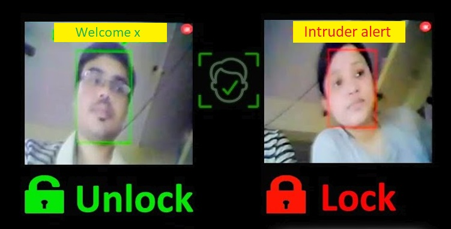

Introduction
Electronic security locks are replacing traditional mechanicals locks for their ease of use, security,
flexibility and they provide us very important features such as remote or automatic control and
intrusion alarms.
I think the electronic security lock consists of 3 main components: Authorization, lock/unlock mechanism
and intrusion alarm.
In this project, We will be studying and implementing an efficient authorization method for the
electronic security lock.
There are many authorization methods for electronic lock such as
-
Using a keypad to get a password from the user and match it with the preset
password.
This approach is very cheap, but it is not very efficient as it takes some time for the user to
enter the password, the password could be leaked or guessed, or the user might forget the password!
-
Using a fingerprint sensor to get the users’ fingerprint and match it with the
preset fingerprints of the authorized users.
This is a better approach from the last one, It’s easier, user friendly and very secure. But still
the user has to put his finger in the sensor, and it has a high cost. (A retinal scanning is a
similar approach)
-
Using a camera to get the users’ face and match it with the stored photos of the
authorized users.
This approach is the easiest as the lock automatically opens once the user gets closer. It provides
good security, but it is less secure than fingerprint approach, it doesn’t cost much, it provides
extra features such as 24 hours surveillance and logging. I will use this method for my project.
To do this we will need to use computer vision to detect all the faces in the photos taken by
the
camera
and match them with the authorized users’ faces stored in the database.
We will also add some extra features to make this lock remotely controlled, by streaming this
camera
output to some online platform on the internet and providing the lock owners with a UI in this
platform
to control the lock from anywhere.

Objectives
- Identifying users’ faces.
- Automatic unlocking for the authorized users.
- Detecting intrusion and sounding the alarm.
- Lock surveillance from anywhere in the world.
- Remote control of the lock.
- Logging users’ entrance timing.
Main components
- ESP32-CAM
- FTDI
- LED (simulates the door lock state)
- Buzzer